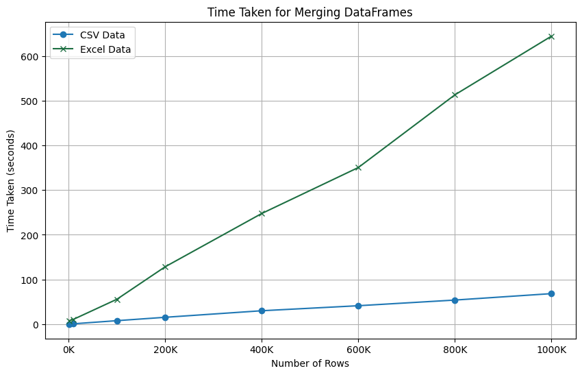

Generic Page
Implication in Data Processing Pipelines
For data scientists and engineers, this graph suggests that when working with large datasets in Pandas, it is more performance-effective to convert Excel files to CSV format before merging. This can facilitate faster data processing and reduce computational load, thereby optimizing the overall performance of data manipulation tasks within the Python ecosystem.
Pandas Optimization
The graph also indirectly speaks to the optimization of Pandas' CSV reading and merging functions. Even as the dataset size scales up to 1,000,000 rows, the time taken to merge remains consistently low, demonstrating the efficiency of Pandas when dealing with CSV files. This optimization ensures that data analysts and scientists can work with large volumes of data without facing significant delays, making CSV the preferred format for handling big data in Pandas.